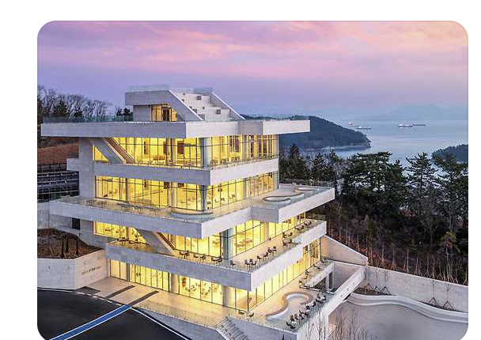
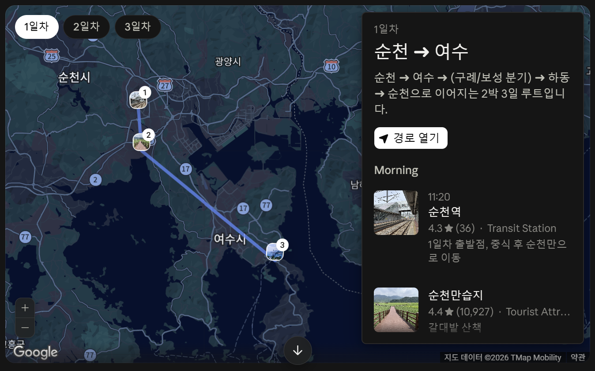
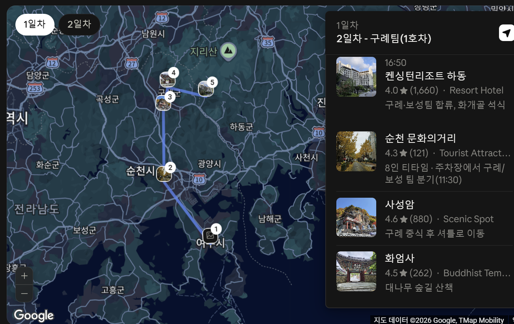
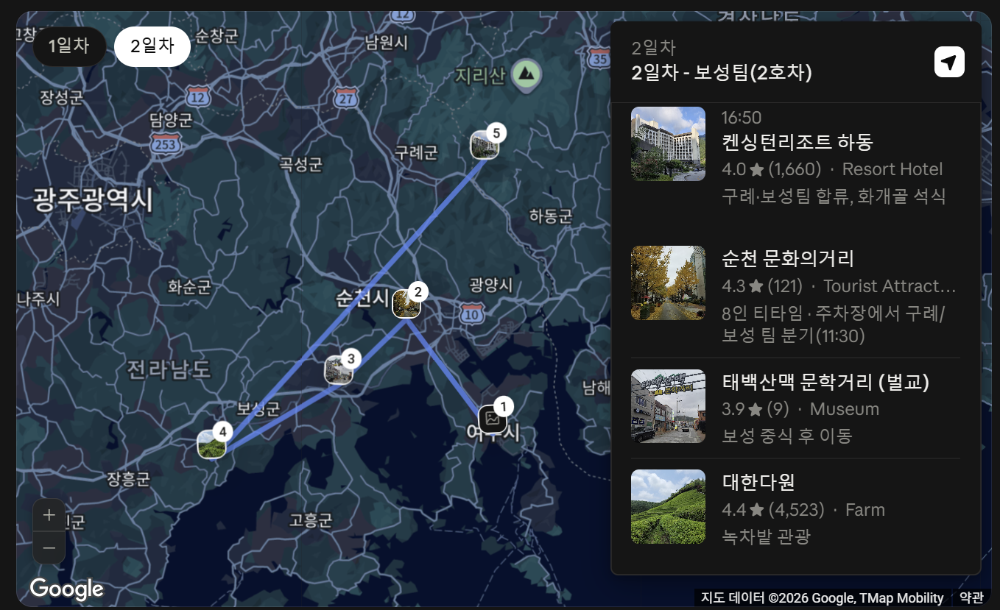
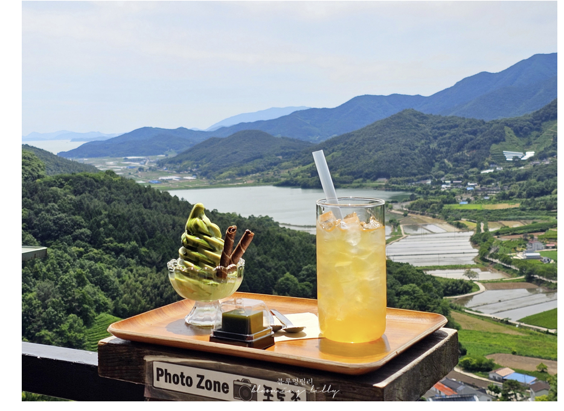
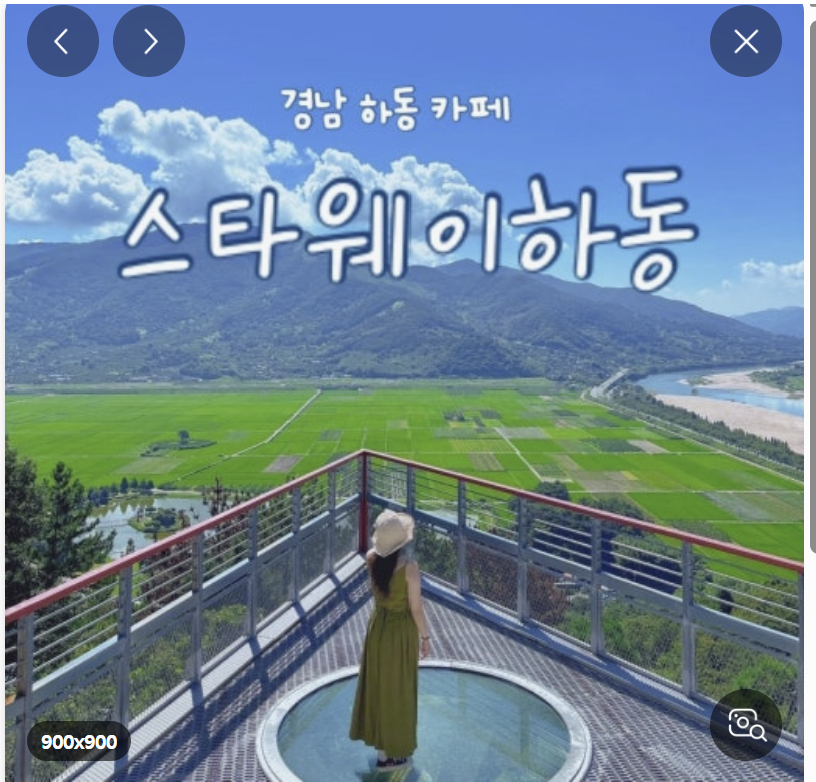
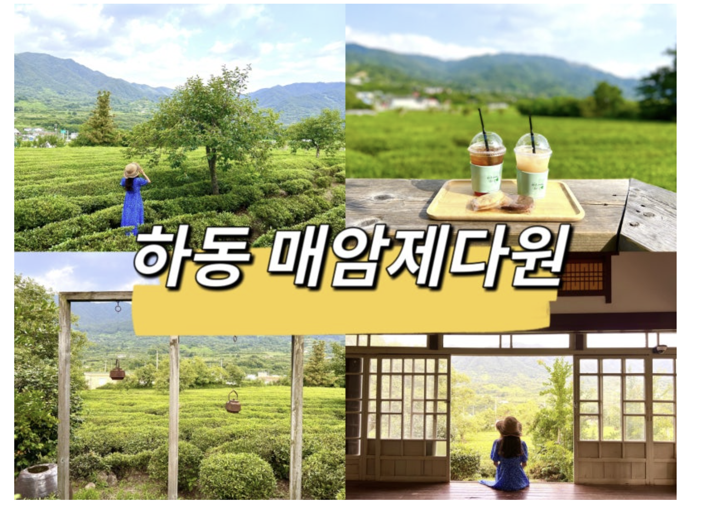
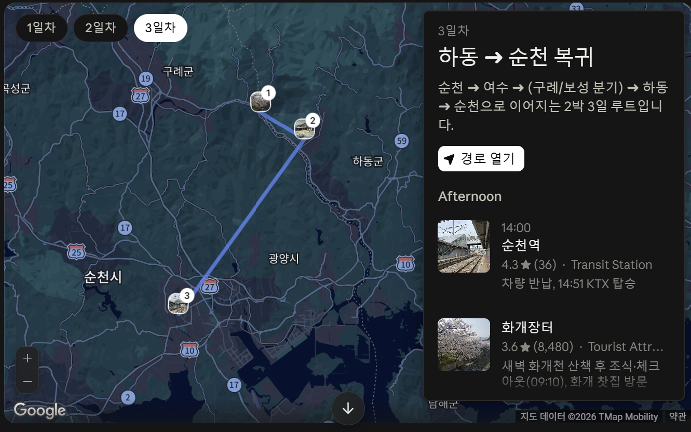

2박 3일11.20 ~ 11.22
8명참가 인원
렌터카 2대+ KTX 왕복
🧑🤝🧑 참여자
김영민
김희경
민윤희
백무현
안은숙
유혜진
임은진
정희석
🚄 교통편
KTX(하)
용산 08:40 → 순천 11:20
KTX(상)
순천 14:51 → 수서/용산 17:36
렌터카
스포티지 2대 · 순천역 11:30 인수 / 14:00 반납
1호차 유혜진·김영민 / 2호차 정희석·민윤희
1호차 유혜진·김영민 / 2호차 정희석·민윤희
🛏️ 숙소
1일차
여수시 시청·학동 권역
2일차
경남 하동군 화개면
🗓️ 일정
DAY 1 11.20 (금) 순천만 갈대 & 여수 밤바다 ▾
11:20–11:40
순천역 도착, 렌터카 2대 인수
11:40–13:00
중식 · 순천 맛집
13:10–14:10
순천만습지 관광 60~80분 소요
14:10–15:00
모이핀 스카이점 이동 돌산읍
15:00–16:00
모이핀 스카이점 카페 방문 오션뷰 루프탑 카페 · 돌산읍
16:00–16:40
여수 R&B 호텔 체크인
16:40–17:30
선택 프로그램 ① 여수 해안가 산책 또는 ② 강종열 화가(동백꽃 화가) 화실 방문 — 택1
17:30–19:30
석식 · 여수 로컬 미식
19:45–20:45
돌산공원 야경 여수 밤바다 조망 / 주차장 앞 평지
21:00–
숙소 복귀, 친목 다과회
📸 모이핀 스카이점

🗺️ DAY 1 이동 경로

DAY 2 11.21 (토) 체크아웃 & 팀별 탐방 ▾
09:00
여수 숙소 체크아웃 · 1·2호차 각자 목적지로 출발 아래 옵션 중 택1 — 선택에 따라 출발시각 유동적
🚗 1호차 · 구례 힐링팀
- 출발 후 구례 이동 (직행 기준 11:30대 도착)
- 12:10 중식
- 13:35 오산 사성암 (셔틀 왕복)
- 15:25 화엄사 대나무 숲길
- 16:20 하동 켄싱턴 도착
🚙 2호차 · 보성 다향팀
- 출발 후 벌교읍 이동 (직행 기준 11:30대 도착)
- 12:05 중식
- 13:20 태백산맥 문학거리 · 보성여관
- 14:35 대한다원 녹차밭
- 14:50 초록잎이 펼쳐지는 세상 티하우스
- 15:45 하동 켄싱턴 도착
🗺️ 1호차 이동 경로 (구례 → 하동)

🗺️ 2호차 이동 경로 (보성 → 하동)

📸 초록잎이 펼쳐지는 세상 티하우스

16:50–18:00
켄싱턴리조트 체크인 & 계곡 조망 휴식
18:15–20:00
8인 합동 석식 · 특식
20:00–
화개골 밤공기와 함께 정담회
DAY 3 11.22 (일) 하동 명품 차 & 평사리 들판 ▾
06:40–07:40
새벽 산책 · 화개천 계곡 데크길 자유 참여
07:40–08:40
조식 · 리조트 지하 한식당 뷔페
08:40–09:10
짐 정리, 체크아웃 09:10 정시 출발
09:15–10:15
최참판댁 & 평사리 들판 소설 《토지》 배경지
11:45–12:45
중식 예약 필수
12:45–13:35
순천역 이동 12:45 정시 출발 필수
13:35–14:00
주유 & 렌터카 반납 14:00 마감
14:00–14:51
순천역 대합실 휴식
14:51
KTX 탑승 · 용산/서울행
📸 ① 스타웨이 하동

📸 ② 매암제다원

🗺️ DAY 3 이동 경로

✅ 체크리스트
- ✓ 여수 숙박 예약 유혜진
- ✓ 하동 숙박 예약 유혜진
- ✓ 렌트카 예약 정희석 · 김영민
- ✓ 여행 루트 초안 정희석 · 김영민
- KTX 표 예매 10월 20일
- 맛집 찾기 민윤희 · 김희경
- ✓ 카페 찾기 임은진
- 야식 타임 백무현
- 여행경비 정산 안은숙 · 여행 후 정산
🎒 준비물
11월 하순 남도는 낮엔 온화(13~16℃)하지만 아침·저녁은 매섭습니다(새벽 체감 2~5℃). 겹쳐 입는 레이어드 룩이 필수예요.
- 탈착형 겉옷 — 경량 패딩, 플리스, 바람막이
- 보행화 — 편안한 워킹화 / 운동화
- 덧신·두꺼운 양말 — 화엄사·사성암 등 좌식 공간용
💰 여행 경비 정산
숙소
1일차 · 여수 R&B 호텔
250,000원(유혜진입금)
2일차 · 켄싱턴리조트룸 2개 · 조식포함 (169,000 + 199,000)
368,000원(유혜진입금)
렌터카
1호차
198,250원(김영민결제_178,250/유혜진 2만원입금))
2호차
274,425원(정희석 결제)
총 지출
1,090,675원
1인 환산8명 기준
약 136,334원
1차 회비
1인 200,000원사전 납부
최종 정산
여행 종료 후 잔액 정산
* 숙소·렌터카 정산 기준이며, KTX 왕복비용은 별도입니다.